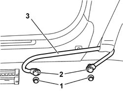
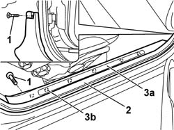

7040L40 REAR COMPARTMENT SCUFF STRIP - R R
- Path
- Procedures > 70 FITTINGS > 7040 BODYSHELL INTERIOR TRIMS AND FITTINGS > 7040L CABIN FLOOR COVERING > 7040L40 REAR COMPARTMENT SCUFF STRIP - R R
- Kind
- repair procedure (removal / refitting; the operation number is the code)
- Applies to
- all engines; all production periods
- Interactive page
- https://sloeber94.github.io/elrnDB-aGt/en/#/125001894
Applies to: all engines; all production periods
 Removing
Removing
 Refitting
Refitting1. Prise up the bolt covers.
2. Undo the bolts.
3. Remove the seat belt retaining bracket.

Applies to: all engines; all production periods
1. Undo the bolts.
2. Remove the door seal in the kick plate area.
3. Remove the kick plate (3a) from the inner retainers (3b) using the special tool.
 | Name | Country |
|---|---|---|
3 | Scraper blade | 1.823.015.000 |

Applies to: all engines; all production periods
Refitting
RemovingCheck that the kick plate is undamaged.
Refit the kick plate, fitting the inner retainers.
Fit the door seal in the area of the kick plate.
Tighten the bolts.
Position the seat belt retaining bracket and secure it using the bolts.
 | Fastening | Component | Ø | Value (daNm) |
|---|---|---|---|---|
- | Bolt | FRONT BELT SLIDING BRACKET. | 7/16" | 4.0 |
Fit the bolt covers.
Topics that link to this page (28)
- 1040A74 LABEL NOT AVAILABLE
- 3340A35 LEFT REAR WHEEL RPM SENSOR - R R
- 3340A37 RIGHT REAR WHEEL RPM SENSOR - R R
- 3340A44 REAR WHEEL RPM SENSORS (TWO) R R
- 5040A80 EXPANSION/CONNECTION PIPE - R R
- 5040B30 EXPANSION VALVE (TUBE ORIFICE) - R+R
- 5040C15 AIR CONDITIONER HOUSING - R R WITH FACIA DISCONNECTED FOR VERSIONS WITH PASSENGER AIRBAG
- 5040C50 AIR CONDITIONER HEATER RADIATOR - R+R
- 5040C64 A/C MANUAL CONTROL SWITCH (ONE) - R+R
- 5040D84 AIR CONDITIONER LEFT HAND AIR MIXER FLAP CONTROL MOTOR - R R
- 5040D90 AIR CONDITIONER SYSTEM WIRING BUNDLE - R R
- 5505C28 INTERGRATED ENGINE BAY AND ABS SYSTEM WIRING - R R
- 5505C34 INTERGRATED INSTRUMENT UNDER FACIA FRONT AIR BAG WIRING - R R
- 5505C41 CABIN WIRING - R R
- 5570T94 REAR TWEETER (ONE), LH OR RH - R R
- 5570T96 REAR SIDE SPEAKER - R R
- 5580T20 BOSE SOUND SYSTEM REAR SPEAKER (ONE), LH OR RH - R R
- 7035C14 FIXED REAR SIDE WINDOW ONE LH OR RH R R INCLUDES CLEANING OF HOUSING
- 7040A97 FACIA TRIM SUPPORT BEAM - R R
- 7040A98 INSTRUMENT FACIA TRIM SUPPORT BEAM - R R WITH FACIA REMOVED
- 7040H10 ROOF PANEL LINING - R R
- 7040H38 CENTRAL PILLAR UPPER ELEMENT - R R
- 7040H42 REAR PILLAR TRIM - R R
- 7040H50 REAR PANEL - R R
- 7040L10 CABIN FLOOR CARPET - R R
- 7040L13 PASSENGER COMPARTMENT FLOOR SOUNDPROOFING - R R
- 7065A12 FRONT SEAT BELT (ONE), LH OR RH, WITH PRETENSIONER ON WHEEL - R R
- 7065A18 HEIGHT ADJUSTER OF ON FRONT SEAT BELT ONE LH OR RH R R